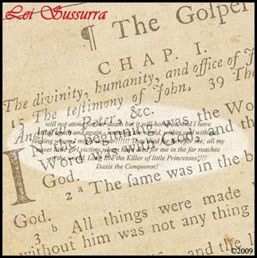

Art Museum Exhibits
Art Museum Exhibits
'John Mark Karr'
The five feet by eight feet mirror image artwork hangs in unuttered effigy in the Santa Barbara Museum of Art with works by Monet and Picasso nearby.
INTERNATIONAL (Lei Sussurra) July 4, 2011 -- Is JonBenet Ramsey suspect John Mark Karr glaring in disgust at his reflection or glued to himself in narcissistic delight? Artists Jason and Carlos Sanchez traveled from Canada to the United States in 2007 to capture the timeless pose of the "monster in the mirror." Critics hate the blowup, not for their dislike of the artists' work but for their disgust for John Mark Karr as a person.
Wrinkled faced and twenty pounds heavier, spectators might need to read the title to recognize the evil face in the "who's the fairest of them all" rendition of Ramsey killer, John Mark Karr. This is not the slimmer, more feminine Karr remembered from the overly exposed media coverage of the murder suspect in 2006. The shirt should be familiar as the one worn by Karr on his extradition flight from Bangkok to Boulder beneath a burgundy tie, now in possession of a one time Karr confidant who divulged to Karr's enemies that she had it along with other Karr collectibles.
The exhibited work might spark protest from the citizens of the conservative southern California seaside city. Santa Barbara is the cite of deceased President Ronald Regan's ranch with such notable homeowners as Steven Spielberg, Tom Cruise, and Oprah Winfrey.
The Santa Barbara Museum of Art's New Faces of the Collection exhibition opened on May 28, 2011 with twenty-seven new photographic additions to the museum's collection. John Mark Karr was a gift of the Catharine Clark Gallery in San Francisco.
Of the twenty-seven new faces along with John Mark Karr is the work Modern Sleep 1 2004 by artist Gottfried Helnwein whose work has depicted dead little girls in such works as his Last Child series of 2008 seen here, here and here. Helnwein was the artist who shot Karr favorite, Marilyn Manson's unreleased album art that featured the shock rocker posed in Nazi attire with little girls in his lap handling a rifle or stroking the one that Manson held. Karr has told Lei Sussurra in the past that Helnwein's photographic artwork is amongst his favorites.
The Santa Barbara Museum of Art ranks amongst the top ten regional art museums in the United States. The museum exhibits works by such artists as Claude Monet, Pablo Picasso, Auguste Renoir, and Rembrandt.
Lei Sussurra
Copyright 2011
All Rights Reserved
 JonBenet Ramsey Evidence Gone With The Wind?
JonBenet Ramsey Evidence Gone With The Wind?
Mother Nature's winds might have further cleared John Mark Karr in the Ramsey murder if they destroyed physical evidence neglected by law enforcement in 2006 who did not make any effort to search the Alabama residence Karr lived at when JonBenet Ramsey was murdered.
INTERNATIONAL (Lei Sussurra) May 2, 2011 -- If Karr's Alabama home was destroyed or partially damaged by last week's tornadoes, will law enforcement be prompted to take another look at the possibility of searching the home of the only man arrested for the murder of JonBenet Ramsey? During the 2006 internationally exposed arrest of Karr for the murder of JonBenet Ramsey, neither his Alabama or Atlanta homes were searched by law enforcement. Karr revealed to law enforcement in 2006 that he was withholding physical evidence. Why did U.S. authorities neglect to search the home Karr resided in when JonBenet Ramsey was murdered? Law enforcement will still require a search warrant in 2011 though possible Ramsey case evidence might be strewn in every direction.
During Karr's taped revelations of the Ramsey murder with CU professor, Michael Tracey, Karr revealed that he had hidden a small box, referred to by Karr as "the gothic box." Karr revealed that the box held JonBenet's underwear, a knife used to cut cord, a garrote used on JonBenet's neck, and a lock of JonBenet's hair. Karr has spoken of the "gothic box" to Lei Sussurra for two years suggesting that it is hidden in an international location. He has suggested that the box has been moved and hidden in new locations since 1996. Is it possible that Karr has misled us to believe this and that instead, the "gothic box" has been hidden all along in the Alabama home that Karr returned to after JonBenet Ramsey's murder?
Karr confirmed to Lei Sussurra that Brooke Dovgan searched his Alabama and Atlanta homes. Dovgan discovered Karr's handwriting samples that experts in America analyzed to link the Ramsey ransom note to Karr. Did Dovgan miss other physical evidence that would solve the fourteen year old murder case?
The media reported in 2006 that Karr's wife, who shared the Alabama home with him and their three children, said he was with her on Christmas 1996. Lara Knutson, stated that she and Karr were at their Alabama home or his parents' Atlanta house that year, according to Knutson's attorney Michael Rains. But Knutson's alibi began to shake as Rains further stated, "But if you are to say to her, 'Are you absolutely certain?' she would say, "No," She has not said to the authorities that her memory is infallible."
Karr's only alibi continued to deteriorate when Boulder District Attorney Mary Lacy revealed more doubt from Knutson about her then husband's whereabouts on the night of December 25th, 1996. Lacy stated at a press conference, "The wife and he were to a great degree estranged at the time. So the former wife who we find to be very credible and very helpful and very cooperative, she did everything she could to dig up every document, photo she could find and she interviewed with officers for some 10-12 hours was unable to establish and when actually asked, "Can you state he was with you?", she had to say "No, I can't. That's not my best recollection," is what she said, "but I cannot state that.""
Trophy hunters might have their chance to plunder through the debris of the possibly destroyed Karr residence in Alabama. In 2006, pine cones from the yard of the Alabama home were placed for sale on Ebay. If law enforcement was negligent to search this home in 2006, they will not secure the area to prevent this.
In 2001, John Mark Karr was held for six months in the Sonoma County Jail while the U.S. Federal Bureau of Investigation and law enforcement across the nation launched a U.S. national investigation for the murders of unidentified little girls in Alabama and Georgia and a twelve year old girl whose body was found below Karr's Petaluma residence in 1997. Karr's Petaluma homes were searched by authorities who found a computer hard drive that contained alleged images of child pornography. Karr fled the U.S. in 2001 on a nonstop flight to London and did not return until he was apprehended in Thailand by the Department of Homeland Security and a detective from Boulder County District Attorney's Office in 2006 on a warrant for the first degree murder of JonBenet Ramsey. When Karr was finally found in 2006 to face the 2001 child pornography charges, the evidence mysteriously vanished, blamed by Sonoma County Sheriff's Department on the move of thousands of pieces of evidence from an old evidence room to a new one. The law enforcement blunder was investigated for one year with no additional information or conclusions. Karr's attorneys told him that the case was "open and shut" whether the evidence was lost or not. The prosecution's photo experts were unable to determine that the photos were of under aged girls.
Questions loom over the only man ever arrested for the murder of JonBenet Ramsey. The child victim's father, John Ramsey, stated that he was disappointed that the case against Karr vaporized so quickly. Why did authorities neglect to search Karr's Alabama and Atlanta homes while he was the prime suspect in the internationally anticipated murder case of the six year old beauty queen? Why did the computer evidence against Karr mysteriously vanish in a Sonoma County evidence room, the only evidence disappearance among thousands of other articles of evidence? Why is the confessed killer of JonBenet Ramsey made immune to further investigation or arrest? Is Karr innocent of all charges or is he a sly killer who stays one step ahead of the law?
Update 05/09/11: Karr informs Lei Sussurra that his Alabama home was not destroyed by a tornado. Minor roof damage and trees destroyed in front of residence reported. Possible Ramsey evidence remains intact.
Lei Sussurra
Copyright 2011
All Rights Reserved
Karr's Ransom Note Resemblance
John Mark Karr releases all four of the handwriting samples used by experts in 2007 to link him to the Ramsey ransom note. Karr reluctantly releases the never before seen samples after being tipped that they were slated to be sold to the tabloids.
INTERNATIONAL (Lei Sussurra) December 25, 2010 -- Lei Sussurra has received four John Mark Karr handwriting samples used in the Linda Arnold, Travis King, Don Lehew and Curt Baggett handwriting analyses of 2007 that linked Karr to a ransom note left behind on the night of JonBenet Ramsey's murder. The experts swore they would testify in court that Karr authored the note that asked for a $118,000 ransom for the return of the six year old girl who was eventually found dead in the Ramsey home fourteen years ago tomorrow.
Karr said, "I didn't want to release these samples but it's better to be released here than to be sold by my enemies to the tabloids. I'm tired of people getting paid to hate me while dragging JonBenet's name through the middle of their bloody slaughter of John Mark Karr."
Karr says these are the four samples that he was encouraged to release to the experts in 2007 by those around him who convinced him it was "the right thing to do." The samples were found in Karr's Atlanta and Alabama homes earlier that same year as the result of a thorough search. Karr confirmed that the original samples are in safe keeping.
The most prominent of the samples, titled "Certificate of Payment", appears to be a deal between Karr and a tenant. The verbose agreement was written in October 1982, fourteen years prior to the 1996 ransom note. It is now being released to the public fourteen years after the ransom note was written. The sample possibly contains the most small case letters in a single Karr document that has ever been released. It is not known exactly when Karr started authoring all handwritten notes and applications in all capital letters, making small case letter samples written by Karr extremely rare.
Though experts link Karr to the 1996 ransom note, it does not prove that he killed JonBenet Ramsey. Lei Sussurra reported in an August 2009 article that "various experts continue to concur that Karr wrote a ransom note that was held by law enforcement as physical evidence. Notably however, some of the experts expressed that, though they were convinced that Karr penned the ransom note, it did not prove that he murdered JonBenet Ramsey. The question might be posed that if Karr could be linked to such physical evidence by experts, does he know who did kill the Ramsey girl?"
In Karr's case, the media and others in 2006 discounted handwriting analysis as a serious method of connecting suspects to physical evidence. In stark contrast to the lack of importance placed on handwriting analysis in 2006, law enforcement asked for numerous handwriting exemplars from Patsy Ramsey who was not at the time in custody for the murder of her daughter as was Karr in 2006. Karr was never asked for an official handwriting exemplar though he did say that law enforcement asked him to write with his left hand while he was being interrogated in Bangkok in 2006. Handwriting exemplars were totally out of the question once Karr was back in America with proper legal representation that forbade it. Karr's Boulder attorney Seth Temin guarded Karr's handwriting in 2006 going as far as asking that the application he filled out upon arrival at Boulder County Jail be sealed from the public.
In 2006, Karr's former classmate shared her high school yearbook with the world that contained an entry from Karr to her. The yearbook entry was the focus of certain handwriting experts who commented that Karr's handwriting was "disguised" or written with an artistic flair that can be seen in Karr's signature on the latest "Certificate or Payment" release. The remainder of the sample seems more naturally written.
Karr doesn't seem concerned about the findings of the handwriting experts responding, "You can link me to a ransom note but you fools squandered away what you had in 2006. You'll never get that far with me again. Thanks to all of you who screamed that I was a lunatic liar, I'm alive and not sitting on death row. Your shouts of "liar, liar" might as well have been shouts of "save Karr's life". Now who's the conqueror?"
Click to view John Mark Karr's handwriting samplesLei Sussurra
Copyright 2010
All Rights Reserved
DHS joins DOJ in Eyeing Karr's Handwriting
It is still unknown if Karr is under investigation by the U.S. Department of Justice and the Department of Homeland Security.
INTERNATIONAL (Circle of Fire) January 4, 2011 -- On Christmas Day 2010, Lei Sussurra released four digitally scanned Karr handwriting samples to the public on their website. The sample scans were supplied by Karr. The samples were first released privately in 2007 to four handwriting experts who connected Karr to the JonBenet Ramsey ransom note.
According to statistical information provided by Lei Sussurra, the recently released JMK handwriting samples were downloaded from their site by the U.S. Department of Justice in Washington D.C. on January 3rd. The Department of Homeland Security joined the DOJ in downloading the Karr handwriting samples on January 28th. The download hit originated from DHS's internet image search for Karr's handwriting samples.
The DOJ and DHS visits to the Lei Sussurra website were extracted from statistical information provided by Lei Sussurra. COF maintains reports that document each hit from federal authorities and other persons or organizations of interest who access the Lei Sussurra and Daxis Report websites.
The U.S. Department of Justice was contacted on January 7th by an unnamed news media organization and asked to confirm the reason why their department downloaded John Mark Karr's handwriting samples on January 3rd. Lei Sussurra CC'd the COF with a copy of their mass mail appeal to several members of American media. Lei Sussurra wrote, "Our sources have informed us that an unspecified news media organization is in talks with the U.S. Department of Justice to confirm whether or not the recent download of Karr handwriting samples is part of a criminal investigation concerning the murder of JonBenet Ramsey."
John Mark Karr confirmed to COF on January 21st that he asked his contacts in America to locate and secure the originals of the four handwriting samples downloaded by the DOJ and the DHS. Karr stated that only one sample has been found, adding that the remaining three were in a separate location. Karr identified the single original found as being the "Certificate of Payment" sample said to be the most prominent of the four. This sample is the only one of four that bears Karr's signature that can be verified against a signature in a 1983 high school yearbook revealed in 2006. Karr would not explain what he meant by the term "secure" in reference to the sample originals. Karr had no comment when asked if he was prepared to give up the original samples to authorities prior to the possible issuance of a federal search warrant.
In 2006, the Department of Homeland Security's Immigration and Customs Enforcement (ICE) assisted in the criminal investigation and extradition of John Mark Karr for the murder of JonBenet Ramsey. The FBI, an agency of the Department of Justice, first surfaced in Karr's life in 2001 according to public records. Federal authorities were not welcomed by the Boulder Police Department to join in the investigation of the murder of JonBenet Ramsey in 1996.
The DOJ has never given a reason for the original download and subsequent hits on the Lei Sussurra ransom note article that featured the first release of viable copies of the most extensive of Karr's handwriting samples. COF cannot confirm if the Department of Homeland Security or the Department of Justice is conducting a criminal investigation on Karr based solely on internet web hits and downloads. The DOJ and the DHS are not obligated to reveal information about any investigation they conduct.
Click to view John Mark Karr's handwriting samplesCircle of Fire
Copyright 2011
All Rights Reserved
Karr's Royal Romance
The posh little princess would talk romantically in French to Karr on her cell phone from her ritzy private secondary school as her young classmates in school girl uniforms breezed by her.
INTERNATIONAL (Lei Sussurra) October 18, 2009 -- John Mark Karr, once arrested and extradited for the murder of six year old JonBenet Ramsey, was romantically involved with one of America's teenage elite prior to his covert exit from the United States in the fall of 2008, according to sources.
"She's from a prominent family that socializes with such names as Hearst and attended an exclusive private school for girls where tuition is $30,000 per year," said the source.
Karr admitted that he had known a girl who fit the description of the upper class teen but would say nothing more giving the strong impression that he would protect his young love's privacy at all cost.
Sources revealed that the posh little princess would talk romantically in French to Karr on her cell phone from her ritzy private secondary school as her young classmates in school girl uniforms breezed by her.
It was also revealed that the young girl was very taken by Karr and would lavish him with extremely expensive gifts spending a few hundred dollars at a time on her high profile boyfriend without blinking an eye.
Karr's contact with others after 2006 and prior to his exit in 2008 was surely limited as a result of the public scrutiny he withstood up to the very point of his final departure from America. Even months after Karr's exit, stories of entire neighborhoods complaining of his mere presence were still being published in newspapers and reported on American television.
Karr gave no details as to the extent of contact regarding his last relationship in America with his young, aristocratic girlfriend which makes it impossible to know if the public prevailed in making certain that Karr would be ostracized from the object of his affection.
Karr is no stranger to relationships with girls in their teens or younger. In 1983, Karr had a secret relationship with a twelve year old girl he would take late at night as her parents slept. Karr married the girl when she turned 13. In 1988, Karr had a secret rendezvous with a 15 year old girl that he married when she turned 16, siring twin daughters and three sons with the teenage girl.
Though the latest sources confirm and past evidence supports that such relationships with young girls have been established in Karr's life spanning back 25 years, conversations so far between Karr and Lei Sussurra have shown no indication of the presence of such a relationship in his life now.
Lei Sussurra
Copyright 2009
All Rights Reserved
 Karr Contemplates Creation of Cult
Karr Contemplates Creation of Cult
Karr as the charismatic leader of a sex cult surrounded by young female followers might seem far fetched but the FBI took it seriously. It might have been the oddest in a long line of investigations launched by the Federal Bureau of Investigation and the Department of Homeland Security over the months and years following his 2006 arrest for first degree murder. Karr's attorneys advised that federal authorities would watch him for the rest of his life.
INTERNATIONAL (Lei Sussurra) September 20, 2009 -- When Manson Family prosecutor Vincent Bugliosi discussed Karr on international television in 2006, it could not have been known that soon the FBI would compare Karr to Charles Manson, not as a killer but as a cult leader. Karr's high school Civics teacher would not have thought that someday Karr would be compared to a psychopathic Jim Jones by federal authorities when years before, a young Karr turned in a school term paper on the charismatic preacher who led over 900 of his followers to mass suicide.
Karr described the bizarre cult investigation, that took place approximately a year after his arrest in 2006, involved a computer that contained chat conversations between himself and one of his contacts. Karr explained that the FBI entered an American family's home and seized the computer in question. From the chat sessions, the FBI derived that Karr was contemplating the formation of a cult that would be comprised of young girls. Karr would not impart a complete description including the events that led up to the investigation, citing self-incrimination.
Karr is from a long line of religious leaders. His father was a missionary evangelist once launching a church in Caribbean Jamaica. Karr's mother, a teen missionary herself, was the daughter of an evangelical preacher who started his own church in Central America's Guatemala until he was chased out by the political unrest of the 1970's.
In the months and years following his arrest for the murder of JonBenet Ramsey, John Mark Karr was the subject of a number of federal investigations ranging from the serial murder of children to international child sex trafficking. In candid conversations, Karr reveals private talks with his attorneys that brought him to his knees as the result of a slue of investigations -- some that would have led to multiple extraditions to foreign lands with some offenses punishable by death.
Karr conveyed that, while he was still in Sonoma County Jail awaiting a child pornography trial, attorney Rob Amparan expressed to him that federal authorities would be watching him for the rest of his life. After his release and back in Atlanta, Karr stated that his attorneys gave him almost weekly accounts of new investigations being launched against him by federal authorities.
"My attorneys were in talks with DHS trying to get my laptop back for one. According to my attorney Gayle Gutekunst, the Department of Homeland Security was investigating me for everything imaginable. It was an emotionally traumatic experience as I received news of one investigation after another," stated Karr.
In one such investigation, Karr was looked at for international crimes against children by the Department of Homeland Security, possibly in conjunction with international authorities such as Interpol. The authorities attempted to trace the steps of Karr's vast international travels from 2001 to 2006. According to his attorneys, one of the investigations revolved around the serial murder of little girls in every country he had lived in or visited in the five years leading up to his arrest for first degree murder.
"I'm sure law enforcement got frustrated with all the gaps in my travels according to the visa stamps in my passport. While I was in Europe, for instance, I traveled from country to country without a visa stamp at all. In all the time I lived in Paris, there was not one visa stamp for France. They missed a lot," stated a seemingly sly Karr.
The idea of Karr as a serial child killer was likely revisited by law enforcement following a chilling message allegedly sent by Karr on Christmas night 2008 wherein he stated that he had killed little girls internationally.
Another of the investigations regarded what the Department of Homeland Security supposedly considered a child sex ring logically centered in Thailand. Karr's location at the time of his arrest in 2006 raised the eyebrows of authorities for its reputation as a center for the trafficking of children for sex. Authorities believed Karr was doing more than teaching second grade in the capitol city of Bangkok. DHS would reach yet another dead end and again, Karr would arise unscathed.
Obviously Karr was halted in his attempt to organize a cult comprised of young female followers or was he? Since there is no knowledge of his current whereabouts nor of the current goings on in his life, could it be that Karr is in some tropical utopia carrying out an old family tradition? Without a doubt, U.S. federal authorities and international law enforcement will certainly make it a point to find out.
Lei Sussurra
Copyright 2009
All Rights Reserved
The Immaculates
A 19 year old California girl has revealed that she escaped a sex cult led by Ramsey murder suspect John Mark Karr. The young girl says she wandered the streets of San Francisco seeking out little girls to deliver to Karr. According to her, Karr's followers are numerous in number and are willing to kill for him.
INTERNATIONAL (Lei Sussurra) May 29, 2010 -- In 2007, the FBI launched an investigation after being alerted that John Mark Karr was organizing a sex cult. Three years later, nineteen year old Samantha Spiegel says she fears for her life as she makes a break from what she describes as a dangerous cult capable of murder. Spiegel says the name of the cult is "The Immaculates" so named after Karr's past references to perfect little girls he has known.
Karr was thrust back into the news when ex-girlfriend Brooke Simmons Dovgan exposed what was thought to be Karr's new identity that has since become questionable. Over the months following the revelation, Spiegel, who says she was once a student of Karr's, has alleged that she was threatened through phone conversations and e-mail transmissions.
Karr stated, "I have made no such threats and would wish no harm to come to this girl or anyone else."
Karr, who has had little to say in response to the serious cult allegations, told Lei Sussurra that he submitted a statement to CNN though there is no indication that the statement was ever aired. It is as follows and was posted on the sidebar of the Lei Sussurra site earlier this week:
"It can never be proven that I am a cult leader who instructs my followers to kill my enemies and seek out little girls for my exploitation. I am amazed that reputable media would grant airtime, much less credence, to any random person who makes unsubstantiated wild claims against a private citizen with no proof whatsoever to back up the lies that are flowing from them. As I have stated in the past, I am the subject of a witch hunt that has dragged me from my private life with the intent to display me to the world like some strange oddity stuck through with a straight pin in my enemies' collection."
A perplexed Karr says of Spiegel, "I believe Samantha is being pressured to say these things about me. This is not the Samantha I have known and loved. I have always had such a deep respect for this girl. I am shocked by what she is doing now but do not hold her responsible. Instead, I believe she is being influenced by outside forces. I understand she has gone through a very difficult time in her past. I wish for her the best and hope sincerely that she will finally come down from this extraordinary media ride with the realization that I am still in support of a better life for her."
Although media organizations report that authorities are searching for Karr, there is no evidence that there is an arrest warrant for the one time murder suspect of a six year old girl. Seattle Weekly responded earlier this week to a virtual all points bulletin for Karr that was released by Fox News during a story about Samantha Spiegel's involvement in Karr's cult:
"Fox claims that police in San Francisco are looking for Karr and have "asked Seattle law enforcement for help" in finding him. But Seattle police are saying the opposite. "We got a bunch of calls on this a couple months ago," says spokesman Mark Jamieson, "but we don't have anything on (Karr)." San Francisco's district attorney is singing a similar tune. "At this point, there is no case to review for charging," says spokeswoman Erica Derryck." (Seattle Weekly)
Samantha Spiegel was the subject of Lei Sussurra's 2009 article titled "Karr's Royal Romance". According to sources, Spiegel is a wealthy San Francisco girl with high society connections. She was a student at a posh private school for girls in San Francisco where Karr was a teacher in 2000. Spiegel claims to have been one of Karr's students though Karr states that he does not recall the girl as a child. Karr and Spiegel were reported to have had a romantic relationship prior to his exit from the U.S. in 2008 though Karr has never confirmed it. Sources revealed that she lavished Karr with expensive gifts and gave him moral support as he prepared to leave the country.
In 2009, Lei Sussurra reported in an article titled "Karr Contemplates Creation of Cult" that Karr has already been looked at by U.S. federal authorities for the possible organization of a cult. Furthermore, Karr has already been investigated by the Department of Homeland Security in 2006 for international child sex trafficking. In the same year, Manson family prosecutor, Vincent Bugliosi discussed the similarities between Karr and Charles Manson who led his cult of young girls to kill, amongst others, Sharon Tate Polanski who was nine months pregnant at the time. If Karr rivals Manson and now leads a sex and death cult in some international location with murderous sleeper cells located throughout the U.S. and the world, it can be guaranteed that after Spiegel's public revelation, the FBI and every other international law enforcement agency has already commenced an investigation to confirm or discount the existence of "The Immaculates".
Lei Sussurra
Copyright 2010
All Rights Reserved
Samantha Spiegel's Macabre Collection of Killers
Karr now knows that he was just another "strange oddity stuck through with a straight pin" in Samantha Spiegel's macabre collection of little girl killers and mass murderers. Karr says he's relieved that he's fallen out of Spiegel's murderous menagerie.
INTERNATIONAL (Lei Sussurra) December 19, 2010 -- In an odd twist, Samantha Spiegel, who said in the spring of 2010 that she was threatened by John Mark Karr who she'd planned to marry, reveals that she's no stranger to romancing child killers and mass murderers according to SF Weekly who dubbed her a killer groupie. It seems she was disposing herself of Karr, through a tough restraining order, to make way for her murderous circle of friends that includes little girl killer Richard Allen Davis, the night stalker Richard Ramirez and cult leader [sound familiar?] Charles Manson. Notably, Spiegel seems only to be drawn to child killers who have murdered little girls.
Karr responding to the recent article said, "Spiegel isn't the first killer groupie in my life and she won't be the last. There's been a long line of them since 2006 and they know who they are. These people are portrayed by the media and others as innocent little victims when in fact, their characters "precede them" with their own words and actions as proof."
Samantha Spiegel smiles at the camera like a supermodel, with a letter to a killer in hand, as SF Weekly photographs her delivery to the deadly. Spiegel expressed to SF Weekly that she was "hoping to receive responses to letters she sent to three men: Charles Manson, the leader of the Manson Family cult who was found guilty of conspiring to murder; Richard Ramirez (the Night Stalker), a serial killer and rapist on death row at San Quentin; and Richard Allen Davis, also on death row for the 1993 kidnapping and murder of 12-year-old Polly Klaas."
Possibly the most bizarre revelation, if any one could be singled out, is Spiegel's desire to have the baby of Klaas killer, Richard Allen Davis. SF Weekly reported, "Samantha told Davis that she was also hoping to take things to the next level, and says they entered into a relationship she considers monogamous. Lately, they've been discussing ways to get her into the jail for a visit. Since she is not a spouse, the visit would not be considered conjugal. But she is hoping they can arrange to meet face to face. She's already thinking about the possibility of having Davis' child, if he wants one."
Marc Klaas is not impressed that Spiegel wants to carry on the Davis name by having his daughter's killer's baby. Klaas said to SF Weekly's Lauren Smiley of Spiegel that she is "a ghoulish young thing who probably won't hit 25 the way she's playing life." Klaas continued, "This is an extremely disturbed girl." Klaas warned, "Anyone who wants to mess with guys like [Charles] Manson, [Richard] Ramirez, and [Richard Allen] Davis has a death wish.” Karr's name was not mentioned in the killer equation.
When asked if he thinks Spiegel is placing herself in danger in corresponding with Manson, Ramirez and Davis, Karr replied, "Davis once said in a New York Post interview that he hoped someone would "pop Karr" which is prison talk that meant he wanted someone to kill me. I was concerned when I first heard about his threat because I had no idea if he had people on the outside who would carry out his wishes."
The rich and now famous Spiegel was showcased like a rising star on Nancy Grace, Fox News, CBS News, Inside Edition, and The Today Show, just to name a few. As Spiegel spread the gospel of Karr cult allegations and death threats in numerous television interviews after filing a restraining order that prompted the police to rush to her protection, the innocently portrayed youth was likely simultaneously corresponding with convicted cult leaders, serial killers and child killers.
Spiegel now seems to contradict the concerns that led her to ask a San Francisco court to keep Karr away forever. Spiegel expressed her lingering feelings for Karr who was the subject of a stay away order that included an exhaustive list of Spiegel spots, listing even her old high school. SF Weekly reported: "The song ends, and Samantha waxes melancholy. "I don't know if I'm over John completely," she says, referring to Karr."
Samantha Spiegel can rest easy that she will never have contact of any kind with John Mark Karr again thanks to her heavyweight restraining order. Finally safe from Karr, could she possibly be more at ease surrounded by her killer connections: Davis, Ramirez and Manson?
In the same article, Spiegel confirmed that she was the one who initiated contact with Karr. SF Weekly reported, "He had worked briefly at her elementary school, Convent of the Sacred Heart in San Francisco, when she was in fourth grade. She remembers having a crush on him back then. A decade later, after watching him confess to the murder on the news, Samantha — then 16 — was compelled to reconnect."
Karr responded, "Reconnect? How is that possible when I never knew Samantha Spiegel when she was a fourth grader at Convent of the Sacred Heart in the first place?"
During the Spiegel allegations, Karr was portrayed as a wanted criminal by mainstream media. Karr responded, "I had to fly from Paris to Atlanta to be on the receiving end of a restraining order issued by a person who was still over two thousand miles away when the papers were presented to me." Karr said that he returned to Paris when he found he'd flown from Europe to America to face charges that did not exist. All that awaited Karr was what might be the world's longest distance stay away order in history with Karr in Europe over five thousand miles away from Spiegel at the time the restraining order was filed in San Francisco, California.
"It just goes to show you that people are allowed to have at me and be protected by the law in the process. This is a classic case of how vulnerable I am to the general public who can get away with doing anything they want to me while law enforcement and the media supports and promotes them." stated Karr.
Karr said in a May article of the twenty year old overnight sensation, "It can never be proven that I am a cult leader who instructs my followers to kill my enemies and seek out little girls for my exploitation. I am amazed that reputable media would grant airtime, much less credence, to any random person who makes unsubstantiated wild claims against a private citizen with no proof whatsoever to back up the lies that are flowing from them. As I have stated in the past, I am the subject of a witch hunt that has dragged me from my private life with the intent to display me to the world like some strange oddity stuck through with a straight pin in my enemies' collection."
Karr now knows that he was just another "strange oddity stuck through with a straight pin" in Samantha Spiegel's macabre collection of little girl killers and mass murderers. Karr says he's relieved that he's fallen out of Spiegel's murderous menagerie. Karr's prophetic statement about the media's responsibility now makes sense.
"Why didn't someone look closer at the background of this person at the time I suffered through a criminal investigation and was plastered publicly in the media by her outrageous claims? I could have gone to prison while Spiegel interacted with child killers and serial murderers galore from the comfort of her Marina District home. Please help me understand how a person who interacts with murderers and wants to have the baby of the killer of a twelve year old girl could possibly need a restraining order to protect herself from me? People need to ask WHY a twenty year old girl is interested especially in men who kill little girls. If anyone needs the protection of a restraining order, I do," said Karr.
Karr says the new revelation expressed by Spiegel to SF Weekly is a buried story that no one will ever know about. He says he resents the wide scale damage that the media inflicted in his life in the spring of 2010 when accusations flew that he was the leader of a cult that abducted little girls for sex with devoted members that would kill all those who stood in their beloved leader's way.
Karr responded, "Where's the media now? They were quick to jump to conclusions about my guilt last spring. Now that Spiegel has shown her true colors, everyone's laying low. It almost makes me think that some in the media have an agenda to criminalize me yet hide the truth about my accusers."
Karr said that he was told by the Karr's in Atlanta that members of the media camped out in rented cars in front of Wex Karr's Atlanta home for days during the Spiegel media flurry, nabbing impromptu interviews with the ailing 89 year old father of Karr as he walked to the street to check his mail. The elder Karr said afterward that he couldn't remember what he had said to any of them. News organizations canvassed properties of the Karr's throughout metro Atlanta, knocking on doors and asking tenants if they had seen John Mark Karr. Members of the media visited an East Atlanta business associated with the Karr's, offering cash to anyone who might see Karr or know of his whereabouts that was rumored to be in Atlanta at the time.
Karr's last words, "My prediction is that someday one of these killer groupies will be the person who ultimately kills ME. When that day comes, nothing will be done about it just as nothing is done now to any stranger in the public who violates my privacy and accuses me of anything they can dream up. If they can imagine it, law enforcement and the public will believe it and the media will sell the story as fact to the world."
Read SF Weekly's full articles:
Killer Groupie Samantha Spiegel
By Ashley Harrell, SF Weekly
http://www.sfweekly.com/2010-12-08/news/killer-groupie-samantha-spiegel/
Polly Klaas' Father Calls Woman Dating His Daughter's Killer An 'Extremely Disturbed Girl'
By Lauren Smiley, SF Weekly
http://blogs.sfweekly.com/thesnitch/2010/12/polly_klaas_father_calls_woman.php
Lei Sussurra
Copyright 2010
All Rights Reserved
Lei Sussurra Under Siege
Law enforcement aggressively surrounded the Lei Sussurra website during an international criminal investigation while Karr was chased by the media and vigilantes found him guilty as not charged.
INTERNATIONAL (Lei Sussurra) December 18, 2010 -- In Spring 2010, law enforcement in the United States obtained several search warrants that included one for Google that was aimed at the Lei Sussurra website which is authored outside the U.S. Thought by some in law enforcement and the media to be authored by Karr himself, the site was scrutinized for IP hit information through uploads of text and graphics though the site has never conducted any illegal activity. Law enforcement also secured a search warrant for Hewlett Packard to link a computer believed to belong to Karr to possibly prove that he created some of the graphics files for the site though there have never been any illegal graphics files uploaded to the Lei Sussurra website.
Lei Sussurra received both phone and e-mail messages from various members of the media, including the Associated Press. The requests asked if the site was authored by Karr and requested proof that would confirm that statements quoted on the site were actually those of Karr. Because of Karr's legal position in the summer of 2010 and a criminal investigation against him for alleged cult activity that followed months afterward, Lei Sussurra was virtually gagged in its response to any requests or publication of any articles to avoid further legal involvement in what had become a criminal investigation aimed not only at Karr but also at the Lei Sussurra website.
Law enforcement attempted to serve another search warrant to Hushmail, a web based encrypted e-mail service that law enforcement believed was used by Karr to send threatening e-mails. Hushmail responded that it was not subject to search warrants issued in another country and directed law enforcement to secure the warrant in British Columbia Canada where their mail servers are located. No followup reports were made to confirm whether the extra measure was taken by U.S. law enforcement to secure a search warrant in a Canadian courtroom.
Possibly resulting from the massive media coverage of Karr's alleged cult investigation, Maldivian police in June 2010 swarmed an international school where Karr, then Reich, taught drama to kindergarten and first grade students from January to July 2009. In a news expose in early July, the owner of the school of six hundred students said that he had to admit that Reich was the most popular teacher in the school.
Karr strongly and sarcastically responded, "I was with those children for six months. I am accused of being a monster and a danger to all children by so many. Where is the carnage? Where are all the raped and dead little girls? If I am the monster everyone says I am, how could I contain myself for six months around all those little girls I worked with everyday who loved me and whose parents loved me? The world's accusations against me are not adding up and this is the proof of it."
Karr, who has never been convicted of a crime and is not a registered sex offender, is tracked like a fugitive criminal by a group that Karr says has taken the law into their own hands, convicting and sentencing him to a life void of privacy and basic rights. This strong and growing group of vigilantes are located across the U.S. and thought to be based in Georgia. The group consists of concerned citizens, retired law enforcement agents, past Karr contacts, and even family members of Karr. The group has established a virtual tracking system in the form of a website that bears Karr's supposed new name. The site publishes scathing updates on Karr and makes an ongoing gestapo style appeal to the public to give information that might lead to Karr's whereabouts as if he were a convicted felon on the run. The web based effort informs the general public that "Reich" is a threat to society and must be stopped. The group's amateur sting operations have attempted to snag Karr as far back as 2008 in Europe and have extended into 2010. The mostly citizen run setups involve phone tapping and e-mail impersonation to land the man they believe to be a threat to children all over the world. The anti-Karr effort has been highly successful in its focus on those once closest to Karr, turning friends and even family into foes. The group's mission is to lock Karr away forever.
Lei Sussurra is not only the focus of law enforcement. High powered law firms eye the site with negative intent as Lei Sussurra gears up for lawsuits. The site created to be a source of information about John Mark Karr has become an incriminating trap that is intimidated by threats from the outside to remain silent or pay the penalty.
Lei Sussurra
Copyright 2010
All Rights Reserved
'Psalms 8:2' Karr's Christmas Incantation
INTERNATIONAL (Lei Sussurra) December 25, 2009 -- John Mark Karr's 2009 Christmas message, more cryptic than ever, might reveal new information in the JonBenet Ramsey murder investigation. Karr sent the message to Lei Sussurra which follows unedited.
Psalms 8:2
i killed her twice - my little girl; my princess; my lover. on her first death, i watched her die and did intend to watch her die by my own hand in a passionate session of Sex and romance. not Believing her dead, after a violenT resuscitation attempt, i did, with deliberation, kill her a seCond time. therefore, my death is forthcoming? never!
ponder this: experts, criminologists, detectives - you fools! the Deceptor of Nothing and All was isolated to that which did not belong to her and all that it touched. my deceptive protector; that sweet standby - serving me well thus far. like playing fetch with a stray dog, you foolishly chase any stick thrown at you. is it easier to wish away the truth and hold on to your ridiculous fantasy than to look into the face of a killer?
you close your eyes so as not to see me; alas, you keep having that recurring nightmare and i promise it never to cease. But one saw me outside a nightmaRe - in the dead of night. draw out the shy one and all your nightmares will come true.
DAXIS
Karr offered no clues that might lead to the meaning of the cryptic message titled with a biblical verse and embedded with selective capitalized letters. Instead Karr lashed out, "The world deserves nothing from me; especially not law enforcement who can all burn in hell before I reveal what they refer to as my hidden physical evidence that would seal my doom. JonBenet deserves my death and it is forthcoming but I will be damned to hell if I allow myself to be killed at the hands of my enemies."
Three and a half years after his arrest and thirteen years after the fact, Karr remains consistent in his confession that he murdered six year old JonBenet Ramsey on Christmas night 1996.
Lei Sussurra
Copyright 2009
All Rights Reserved
Revelation by Degree
Karr's Psalms 8:2 Christmas message of 2009 went completely unnoticed though it might have been the most revealing and important message yet.
INTERNATIONAL (Lei Sussurra) April 9, 2010 -- Daxis shares his "Revelation by Degree" with Lei Sussurra which was conveyed in the Spring of 2009 to a detective who will remain nameless. The 2009 Christmas message is inserted for clarity though it was not present in his original message.
"There are reasons my messages are cryptic," Karr conveyed to the detective. "I have tremendous reservations about discussing this matter again. One side of my message screams out to be deciphered while another prays you will never know the meaning. If you do not decipher it, I can breathe easy and continue running. If you do decipher it, I shall decrease and die at the hands of my enemies. My guilt is determined that you decipher my message. My guilt will not rest and is the driving force behind what I am to say to you."
Stanza One: i killed her twice - my little girl; my princess; my lover. on her first death, i watched her die and did intend to watch her die by my own hand in a passionate session of Sex and romance. not Believing her dead, after a violenT resuscitation attempt, i did, with deliberation, kill her a seCond time. therefore, my death is forthcoming? never!
"In the first stanza, through expression obvious to me yet unseen by you, I admit that I wrote a letter and left it behind; therefore, you must not ignore those experts who know that to be true. In the first stanza, I will assure my death, sealing my fate if ever I am recaptured through my reluctant admission that I wished to watch her die. In the end, I mock the foolish authorities who will let me get away with murder."
Stanza Two: ponder this: experts, criminologists, detectives - you fools! the Deceptor of Nothing and All was isolated to that which did not belong to her and all that it touched. my deceptive protector; that sweet standby - serving me well thus far. like playing fetch with a stray dog, you foolishly chase any stick thrown at you. is it easier to wish away the truth and hold on to your ridiculous fantasy than to look into the face of a killer?
"In the second stanza, I mock everyone who chases the "deceptive protector". And every minute that it is chased, I gain momentum; therefore, you must not ignore those experts who know that to be true."
Stanza Three: you close your eyes so as not to see me; alas, you keep having that recurring nightmare and i promise it never to cease. But one saw me outside a nightmaRe - in the dead of night. draw out the shy one and all your nightmares will come true.
"The final stanza is critical - it is the matter at hand. It resonates the biblical verse. Psalms 8:2 is about the past. Psalms 8:2 is about a person. Psalms 8:2 ponders what that person is now capable of doing. Psalms 8:2 is about those things that I am unsure of but must confirm or discount else I shall not be at peace with my freedom."
Karr's message contains three acronyms revealed as the only capital letters amongst small case letters in the message: "SBTC" in stanza one, "DNA" in stanza two, and "BR" in stanza three. It was thought in 2006 that "SBTC" stood for "Shall Be The Conqueror" based on an entry written in a yearbook from 1983 by a younger Karr. "DNA" is obvious while "BR" remains vague.
Lei Sussurra
Copyright 2010
All Rights Reserved
Eyewitness in Ramsey Murder Case
Will there finally be justice for JonBenet Ramsey? If Karr's revelation leads to an eyewitness, only one person can answer that question.
INTERNATIONAL (Lei Sussurra) May 10, 2010 -- John Mark Karr's manuscript "DAXIS" revealed an important piece of information overlooked by authorities in 2006. Now Karr releases an excerpt from "DAXIS" in connection to his '09 Christmas message. Karr confirms that the excerpt revolves around the third stanza:
"you close your eyes so as not to see me; alas, you keep having that recurring nightmare and i promise it never to cease. But one saw me outside a nightmaRe - in the dead of night. draw out the shy one and all your nightmares will come true."
Karr's excerpt from "DAXIS" follows:
"Finally I have made it to the spiral stairway. I can do this. I can walk up these stairs and deliver this note. One step and now another. This will be over soon and I can be back with JonBenet. What is that noise? Damn it, someone is awake. That was a person’s voice. Oh damn! I’m trapped. I can’t move. I can’t go up any further. I have to get out of here. That was a voice. I’m certain of it. I have to get away. I can’t run. I have to be quiet. Oh God, I can’t return to JonBenet. I can’t return to the basement. I must run out the door. Damn it, my shoes. I left them at the top of the stairs in the basement. Now I must go back to the basement. God, I am going to get caught. I have to make it to that basement entrance before they catch me up here. I have to make an escape. I don’t know what I have to do. I only know that I have to get away. Finally back at the entrance of the basement. What if they are right behind me? What if they saw me reenter the basement?"*
Karr titled his '09 Christmas Message "Psalms 8:2" which is a verse from the bible that reads, "With praises from children and from tiny infants, you have built a fortress. It makes your enemies silent, and all who turn against you are left speechless." Karr revealed earlier, "Psalms 8:2 is about a person. Psalms 8:2 ponders what that person is now capable of doing. Psalms 8:2 is about those things that I am unsure of but must confirm or discount else I shall not be at peace with my freedom." Karr now reveals with the release of his third revelation that "Psalms 8:2" is about an eyewitness who saw him on the night of the Ramsey murder.
The "DAXIS" excerpt describes the failed delivery attempt of a ransom note that was later found scattered in various locations of the Ramsey home. In 2007, handwriting experts Don Lehew, Travis King, Curtis Baggett and Linda Arnold linked samples of Karr's handwriting to the ransom note. Some of the samples were written thirteen years prior to the night of the murder. The samples were found in Karr's Atlanta and Alabama homes by his then girlfriend, Brooke Simmons Dovgan, who he says encouraged him to turn them over to the experts who were convinced that Karr wrote the ransom note though their findings did not prove that Karr killed JonBenet Ramsey.
How could Karr have been seen by an eyewitness in the Ramsey home if he had such a strong alibi from his ex-wife in 2006? At the time of Karr's '06 arrest, the media widely reported that his wife in 1996, Lara Knutson, stated that she and Karr were at their Alabama home or his parents' Atlanta house that year, according to Knutson's attorney Michael Rains. But Knutson's alibi began to shake as Rains further stated, "But if you are to say to her, 'Are you absolutely certain?' she would say, "No," She has not said to the authorities that her memory is infallible."
Karr's only alibi continued to deteriorate when Boulder District Attorney Mary Lacy revealed more doubt from Knutson about her then husband's whereabouts on the night of December 25th, 1996. Lacy stated at a press conference, "The wife and he were to a great degree estranged at the time. So the former wife who we find to be very credible and very helpful and very cooperative, she did everything she could to dig up every document, photo she could find and she interviewed with officers for some 10-12 hours was unable to establish and when actually asked, "Can you state he was with you?", she had to say "No, I can't. That's not my best recollection," is what she said, "but I cannot state that.""
It was generally reported that Knutson was searching for evidence such as photos of Karr on Christmas 1996 that would prove his innocence. In reality, Knutson was being considered as a material witness for the prosecution and was also searching for such items as credit card receipts that would place Karr in Boulder in and around the date of the Ramsey murder. No such receipts were reported by the media to have been found but neither were any photos ever found of Karr taken on Christmas 1996 that would place him in Alabama or Atlanta on the night of the Ramsey murder.
Surely Karr can depend on the DNA evidence to protect himself against a potential eyewitness account. After all, Mary Lacy used this evidence to exonerate both Karr and the Ramsey's. Unfortunately for Karr, this DNA find has been linked to no one, making it the most famous "Dead End DNA" in criminal history.
An eyewitness is defined as one who sees another person commit a crime. In this case, Karr points to a person who saw him in the Ramsey home which is very different from a person who witnessed a murder. Eyewitness identification is powerful evidence against a possible perpetrator. Some consider eyewitness accounts to be second only to genetic evidence, if not more powerful, to convince a jury of the guilt of a defendant. It has also been established that eyewitness accounts can be highly flawed and sometimes so incorrect that innocent people have been convicted as a result.
Will an eyewitness finally speak and lay to rest a thirteen year old murder case? It might be compulsory for a potential eyewitness to at least comply to questioning by law enforcement according to Colorado state law.
*DAXIS, by John Mark Karr, Copyright 2006, All Rights Reserved
Lei Sussurra
Copyright 2010
All Rights Reserved
Karr's Messages from Beyond: Ravings or Revelations?
Karr's Christmas messages receive the attention of authorities and the media but are they simply the ravings of a lunatic? When does American law enforcement know when to take a message seriously and when to discount it?
INTERNATIONAL (Lei Sussurra) September 25, 2009 -- On Christmas night 2008, a message titled "Let Them Die!" was received by detective Oliver Gray. The message was signed "Daxis the Conqueror" but could just as well have been signed "Napoleon Bonaparte" for what it was worth. In it, the author expressed a longing for a deceased JonBenet Ramsey, comparing the experience of killing her to little girls the world over.
The strongest statements in the message read, "And I have killed again and again - roaming the world, within and without, seeking whom I might devour! They died for her; for me; all my sweet little girl victims whom have died for me in the far reaches of the world."
Karr was supposedly investigated for the serial murder of little girls internationally by U.S. federal authorities. In his message, he admitted that he had killed little girls all over the world and would kill again. So why did law enforcement ignore Karr's revelation?
One reason might be that Karr is simply not taken seriously. Though his writings and recorded phone conversations of 2006 were found to corroborate with evidence in the Ramsey case and revealed information withheld for ten years, he was finally thought to be a delusional liar.
When does law enforcement know when or when not to act, based on words alone? American law is unique because of its foundation in the U.S. Constitution that allows its citizenry to express their thoughts freely. What factors are legally considered to make a distinction between free speech and a valid threat?
California Penal Code Section 422-422.4 defines a serious threat as "Any person who willfully threatens to commit a crime which will result in death or great bodily injury to another person, with the specific intent that the statement, made verbally, in writing, or by means of an electronic communication device, is to be taken as a threat, even if there is no intent of actually carrying it out, which, on its face and under the circumstances in which it is made, is so unequivocal, unconditional, immediate, and specific as to convey to the person threatened, a gravity of purpose and an immediate prospect of execution of the threat, and thereby causes that person reasonably to be in sustained fear for his or her own safety or for his or her immediate family's safety."
Terms in the code such as "unequivocal", "unconditional" and "specific" define what constitutes a true threat. There seems no room for vague, psychotic ramblings from a source not considered to be credible.
On closer inspection, Karr's writings bear a strong resemblance to biblical verses easily explained by his family's bizarre religious background. In the message, Karr seems to liken himself to Satan using such phrases as "roaming the world, within and without" and "seeking whom I might devour" which can be found in various forms in the Christian bible in reference to the devil.
Karr's Christmas message is not the first of his writings to be looked at by authorities. Possibly the most prominent of Karr's writings is that of a lengthy manuscript with a title bearing his pseudonym -- Daxis. The manuscript, according to Karr, is an autobiographical account of his life with certain changes made to protect the innocent. The written work includes a supposed account of the night of the murder of JonBenet Ramsey. The media demanded a copy of the manuscript from the Boulder district attorney in 2006 but were denied it based on Karr's intellectual property rights.
There have been other occasions when U.S. law enforcement and the media have taken notice of messages similar to those of Karr. The so called Zodiac serial slayings of the 1970's spawned a series of messages that were left in various locations and published in a newspaper on a regular basis much like commercial ads. There was no definitive killer prosecuted in the Zodiac case as a result of the messages though they were considered accurate by many, as were Karr's writings of 2006.
There seems a confirmation, as the result of the 2006 public defamation of Karr's character, that nothing he says or writes should ever be taken seriously. If anyone has been granted the license to speak freely and on any subject matter, with an unspoken immunity to self-incrimination; it has been handed to the incredible Karr.
Will John Mark Karr send a new message on Christmas night 2009? Does it matter if he does? Not according to the authorities Oliver Gray contacted last Christmas who filed the "Let Them Die!" note away as the message of a madman. Karr seemed serious when he ended with "Long live the Killer of little Princesses!" however, seriousness is a matter of opinion if you are considered by the world to be a pathological liar.
Lei Sussurra
Copyright 2009
All Rights Reserved
Karr now Reich
A confusing metamorphosis or a certainty for once John Mark Karr? Is "he" now a "she"? The former Karr speaks exclusively to Lei Sussurra.
INTERNATIONAL (Lei Sussurra) April 2, 2010 -- An American tabloid newspaper and a tabloid news television program reported last week of a transformation providing a photo that is to be accepted as the former John Mark Karr, the 2006 prime suspect for the 1996 murder of JonBenet Ramsey. Skepticism abounds as the story unfolds. So far, mainstream media has not touched the bizarre revelation.
The story was likely sold for a hefty sum by an ex-girlfriend of once Karr, now Reich. Brooke Simmons Dovgan was a 22 year old Las Vegas cocktail waitress in the process of a divorce from a circus performer when Karr was first contacted by her in 2006 after his arrest for the murder of the Ramsey child. The former Karr said all around him warned of the danger of the young girl's intentions to be involved with him citing it might be for profit. The former Karr says Dovgan obsessively paged through news story after news story about him throughout their contact. Though Dovgan has proposed the couple was physically together, Karr says their relationship was ninety-nine percent via telephone conversations.
Lei Sussurra has received information that Brooke Simmons Dovgan has been under contract with the major television tabloid news program that aired the photo of the former Karr on Friday of last week since the first interview she did with them while with the former Karr in and around 2006. According to sources, Dovgan has been blackmailed by the contract that if she does not deliver interviews, the tabloid television program will reveal secret information about her. The former Karr says he knows what the ex-girlfriend is being blackmailed for but will not yet share it.
Brooke Simmons Dovgan, who is the mother of a six year old little girl, contends that the former Karr never met her child though he has told Lei Sussurra that he did indeed meet the little girl with the witness of Dovgan's mother. The ex-girlfriend paints the former Karr as an admitted pedophile at the time of their interaction which begs to question why a mother of a little girl would remain involved with a self-proclaimed pedophile if not for the primary purpose of monetary profit.
Anonymous sources tell Lei Sussurra that Brooke Simmons Dovgan is selling information to tabloids leading up to a "tell all book" that she plans to write and have published through an ex-spokesperson of the former Karr's brother and father who are now no longer on speaking terms with the former Karr according to him. The former Karr says the spokesperson was never a representative of him personally and that he was "in it solely for profit."
The next question presented is if the former Karr, now Reich, remains male or is now female. Both forenames are extremely unisex in nature. A name change definitely occurred in the American state of Washington in 2008. The story becomes stranger when it was found that Karr's name was changed not once but twice. The first change contained a forename that would be unmistakeably female. Did the former Karr do this on purpose to confuse the public in case the change was detected? The double name change remains a mystery.
When asked about the sex of the new Reich, the former Karr responded, "Paul said in Corinthians, 'I have become all things to all men so that by all possible means I might save some.'" The average sex change operation costs $25,000 U.S. It might be questioned as to how the former Karr got this kind of money if he or she has been on the run since 2008 with no work or only work as a very low paid teacher.
It was once said that the former Karr was interested in publicity. This last act seems to point in a different direction entirely. In 2006, the former Karr wrote to Michael Tracey that he was planning a sex change operation and a new name so that he might "vanish completely". This was one of the reasons that law enforcement acted promptly in arresting the former Karr out of concern of such a disappearance. The former Karr seems to have finally carried out his original plan. This would indicate that the former Karr had planned all along to vanish, not to become a famous phenomenon overnight as the media portrayed him in 2006. This fact alone might shed new light on the former Karr's guilt.
The now Reich is what would have been considered a private U.S. citizen prior to a gross outing by American tabloid news. Lei Sussurra was sent a letter of cease and desist that warned that the name should not be used publicly. The last name is being used here only. It is not the intent of this effort to reveal any names nor has it been this effort's practice from the beginning. A story entitled, "Karr's Royal Romance" never revealed the identity of a teenage girl in America who was the last of the former Karr's romances in the States. Confidentiality is important to this effort and will remain a pledge.
The current location of Karr is as interesting as the new change. Eyewitnesses are stepping forth with the confirmation that the former Karr was in Seattle Washington recently. The television tabloid news program stated that the former Karr is in Thailand. Karr will not confirm his current location nor has he ever.
Lei Sussurra
Copyright 2009
All Rights Reserved
Karr Ponders Polanski's Plight
For a man who abducted a twelve year old girl and married her when she was thirteen, it is no consolation to John Mark Karr that Roman Polanski was arrested in Switzerland after 31 years for a lesser act.
INTERNATIONAL (Lei Sussurra) October 1, 2009 -- John Mark Karr is no stranger to being arrested in foreign lands and extradited back to the States for crimes committed years prior. Though there seem similarities between Karr and Polanski, the differences in their individual outcomes are vast.
Karr expressed his opinion of what's next for Polanski, "The priority for Polanski's attorneys is to fight extradition at this point. He could not be in a better place than Switzerland. In the past, Swiss nationals have been given the choice of whether they wish to be extradited for a crime or not. Although Polanski is a French national, he is in a country where laws are very different from the rest of the world. Polanski might likely seek asylum in Switzerland as did Mark Rich, a businessman who fled America because of charges by the U.S. government for tax evasion. Mr. Rich was granted asylum and now lives in Zug."
Karr, who says he now lives a comfortable yet covert life, does not want anything to disrupt what he has now. Karr will not be breathing as easy now that Polanski has been arrested 31 years after he became a fugitive from the State of California. Though Karr is living the good life now, he might find himself once more surrounded by law enforcement for his past crimes regardless how far back they span.
Karr responded to Polanski's arrest stating, "Roman survived the holocaust. His wife Sharon was brutally murdered in 1969. How much more can this man take? Since he fled America, he has directed such wonderful films as "Tess" and "The Pianist." His daughter was born after he left America and is now a grown woman. I believe this only proves how obsessed and relentless law enforcement can be in America. He's brilliant and now he has to be dragged back to the United States to face this after 30 years."
Why does Polanski get arrested for sex with a thirteen year old girl while Karr gets away with abducting a twelve year old girl and marrying her at thirteen? There are main differences between Karr's situation and Polanski's. Polanski was charged and then pled guilty to those charges. He was then convicted and was awaiting sentencing when he fled from America. Karr has never been convicted of any crime.
Karr remains as teflon as Gotti. It matters not his connection or confession to any crime. It matters not the evidence against him for if all else fails, the evidence simply vanishes. Frustration of authorities must be beyond belief as Karr rises unscathed from their every attempt to bring him down.
Karr continued, "The girl Roman was involved with years ago is totally against all this and says she will come to court and stand on Roman's behalf. Why does the LA prosecutor want to bring all this up after so many years? It is possibly all about politics. The prosecutor who finally nabs Roman Polanski will be hailed a hero."
In America, the State establishes a criminal case against any person accused of having sex with a minor child. In this case, the State of California versus Roman Polanski. Whether the alleged victim wishes to press charges or not, is completely irrelevant. Sexual activity initiated by any person with a girl that is not of legal age to consent to sex is considered statutory rape in all American states. The State does not view a minor child as one capable of making a decision concerning sex and, therefore, represents the prosecuting body against the accused. The State's primary position in the matter is to enforce the protection of all its minor children.
Karr stated, "Polanski was an inspiration to me when I left the United States in 2001. I knew that he had fled to Paris and found refuge there. I also knew that France had little to no extradition treaty with the United States."
Karr's 2001 escape from America was in response to an FBI investigation for a series of crimes ranging from possession of child pornography to the murder of a 12 year old girl in Northern California and the murder of another little girl in the Southeast. Karr says there was more that inspired him to leave then.
"I knew that it was all over for me when I was discovered by the feds for the first time. I knew what was to come next but did not know I could escape it until 2006. I had to leave the United States in 2001 for the same reason I had to leave the country in 2008," says Karr.
Karr was extradited to California in 2006 for alleged possession of child pornography. If the child pornography ever existed, it could not be proven by Sonoma County authorities who supposedly lost all evidence in the 2001 case against Karr.
Does Karr feel overly confident that he will never be taken down as was Polanski recently?
Karr responds, "No matter how many years it's been, you can never know when the bell will toll for you. That is exactly what happened to me in 2006. I was living a wonderful life and the bomb dropped. I know how Roman feels. It is a big loss. In 2006, I was a second grade teacher with the most beautiful classroom I'd ever had. I had just spent weeks decorating it when I was arrested. A future arrest is like an impending doom. There is no escaping it."
Does Karr exhibit arrogance in the fact that he has never been convicted?
Karr responds, "I am thankful that I have been spared though I know I am not worthy. Spared or not, I still feel tremendous guilt over all that I have done. There are more ways to pay for a crime than what most view as justice served. Though I can never pay a price high enough for my sin, my life has been a misery and for good cause."
Lei Sussurra
Copyright 2009
All Rights Reserved
Karr Contends Madeleine McCann is Alive
In chilling descriptions, an experienced Karr provides reasons why McCann's abductors might have spared her life.
INTERNATIONAL (Lei Sussurra) September 10, 2009 -- A judge in Portugal has banned a book titled "The Truth of The Lie" wherein writer Goncalo Amaral efforts to convince readers that abducted child Madeleine McCann is dead. Many consider his conjecture to be a hindrance in solving a missing child case as opposed to a child murder case. John Mark Karr has said since her disappearance that McCann is alive based on what he refers to as his "past experience."
"I can depend on my own background and international experience to come to a conclusion. I believe she’s alive for several reasons. I'm also not convinced that she was taken by a pedophile," Karr stated.
Lei Sussurra has excerpted his theory from a rare radio talk show format entitled "Deeper". In the November 2008 transcript, Karr expresses his belief that McCann was taken by crafty abductors with experience moving about Europe, undetected.
"I believe she is and will remain in mainland Europe due my past experience moving through those countries over a period of several years. In the event that the kidnapper or kidnappers would need to change locations frequently to evade law enforcement, they could travel from country to country without having to present a passport. This was my experience for the two years I lived in various parts of Europe," Karr expressed.
In chilling descriptions, an experienced Karr provides reasons why McCann's abductors might have spared her life stating, "I think she’s still alive because, quite simply, she was worth keeping alive. As harsh as that may sound, one must think as the abductor would think to understand what might've likely happened to her."
Karr further explained to Lei Sussurra that he believes a family wanting a child of their own might have paid an abductor to have her. Karr explained how easily McCann could integrate into a new family.
"Madeleine was three when she was taken. She was taken young enough to rearrange her memory processes. At just under four, it’d be easy to reprogram her thoughts of her past family to that of another family or even another individual. Her memory of her parents and siblings at the time of her abduction could easily fade with the proper deprogramming," Karr explained.
Karr further explained why he thinks McCann, if alive, has not been found.
"Unless she’s recognized by her physical attributes, there’s no way she can be identified. The abductors can produce a bogus birth certificate to obtain a passport. Passports are the premiere identity document in Europe. In my past experience working with children in Europe, they all had passports acquired by their parents," Karr explained.
Though Karr has been considered by some a threat to society, he went on to share his own ideas on methods of prevention.
"This brings us to a measure that might be well considered in the future – mandatory fingerprinting of children with a database in place. In other words, when a parent makes an attempt to order an identity document like a passport, the child’s fingerprints have to be provided and compared to an international database. It could also be required to check fingerprints of children registering for school. It might sound extreme but it would tremendously help in the search for missing children who otherwise go right under the wire," stated Karr.
Karr abducted a twelve year old girl in America in 1983, taking her across state lines which would have resulted in the involvement of the FBI and considered a federal case had it been legally pursued. SWAT teams swarmed Karr's Atlanta home just moments after he left with the twelve year old girl to return her to her parents. Karr rendezvoused with a fifteen year old girl in 1988 prior to an elopement with her when she was sixteen. Karr was arrested on two counts of first degree murder and two counts of kidnapping of six year old JonBenet Ramsey in 2006.
Lei Sussurra
Copyright 2009
All Rights Reserved
The Daxis Damsel
Karr's poem about the damsel has circulated amongst Lei Sussurra journalists since 2009.
INTERNATIONAL (COF) February 2, 2011 -- Lei Sussurra says, from the beginning, Karr has made vague references to a girl they refer to as, "The Daxis Damsel." Now Lei Sussurra passes the poem to COF for release on The Daxis Report.
Twenty four hours after COF's release of Karr's poem, Lei Sussurra made a public appeal on their website seeking information that might lead to the identity of "The Daxis Damsel." Several possibilities were received though none can be confirmed. COF alerted Lei Sussurra with the possible identity of the Daxis Damsel prior to the release of Karr's poem. At this time, the lead cannot be confirmed.
Lei Sussurra made brief contact with Karr on Tuesday who had little to say about the poem. Karr was presented with all possibilities received by Lei Sussurra along with COF's only lead of the Damsel's possible identity. Karr would not confirm any of the leads, instead briefly stating, "The poem was written years ago about a seven year old girl. You had no right to release it."
COF and Lei Sussurra believe the poem is about two little girls, confirmed by Karr's repetition, "Another Princess, Daxis chose."
Sweetly sleep, My Daphne Rose,
Silent Sweet, an Angel's Pose,
Another Princess, Daxis chose,
While Damsel dreamt, My Love arose.
Dreams of little girls of old,
Yellow streams of marigold,
Sweethearts' hands, once to hold,
Now lie folded, dead and cold.
Sweetly sleep, My Daphne Rose,
Silent Sweet, an Angel's Pose,
Another Princess, Daxis chose,
While Damsel dreamt, My Love arose.
For Daxis' Princess, dragons slain,
All for Her, He can obtain,
Laughter silver, cried like rain,
Covered we, the winter pain.
Sweetly sleep, My Daphne Rose,
Silent Sweet, an Angel's Pose,
Another Princess, Daxis chose,
While Damsel dreamt, My Love arose.
In Love's casket, safely set,
Secrets in a heart locket,
Memories of the night we met,
Like jewels in Her crown beset.
Sweetly sleep, My Daphne Rose,
Silent Sweet, an Angel's Pose,
Another Princess, Daxis chose,
While Damsel dreamt, My Love arose.
Written by Daxis (date written unknown)
Circle of Fire
Copyright 2011
All Rights Reserved
Karr's Ties to the Middle East
Karr's "Special Notes to Special Ones" speaks to loved ones in Iraq.
INTERNATIONAL (COF) January 23, 2011 -- Karr's message to the AlAzawi family in Iraq expressed his love for their daughter Yasmin whom he wrote he'd seen last in Europe. Karr's international travels have been nonstop since 2001 and have been the focus of federal and international authorities ever since. Lei Sussurra reported that, in the months following his 2006 release, the Department of Homeland Security investigated Karr for the international serial murder of little girls as well as a child sex ring centered in Bangkok Thailand. Karr swears he hasn't been in the Middle East since January 2009.
Under the "Special Notes to Special Ones" sidebar category on Karr's Alexis Nexus website, Karr wrote a heart-warming message some time back to a family he seems quite close to in Iraq.
"I thought of you on my last visit to Dubai. UAE is so close to your country. Every time I pass through the Middle East, you are in my thoughts. Iraq is such a beautiful country and its children even more so. It was my pleasure to spend such happy times with your daughter Yasmin when last we connected in Europe. In all my contact with the children of Iraq, I have never known a better sense of family. I hope to see all of you once more in Europe or in your lovely Iraq." Alexis
In the article Karr Contemplates Creation of Cult, Lei Sussurra reported international investigations that took place after Karr's release in 2006 according to Karr's San Francisco attorneys. "Karr was looked at for international crimes against children by the Department of Homeland Security, possibly in conjunction with international authorities such as Interpol. According to his attorneys, one of the investigations revolved around the serial murder of little girls in every country he had lived in or visited in the five years leading up to his arrest for first degree murder."
Lei Sussurra reported in the same article, "Another of the investigations regarded what the Department of Homeland Security supposedly considered a child sex ring logically centered in Thailand. Karr's location at the time of his arrest in 2006 raised the eyebrows of authorities for its reputation as a center for the trafficking of children for sex."
Authorities last had access to Karr's passport in 2006 that would have revealed most of the countries he traveled through from 2001 to 2006. Since visas are not connected to international computer databases at this time, it is impossible to prove whether Karr has frequented countries in the Middle East on new passports since 2006.
Karr confirmed to COF that his last visit to the Middle East was in January 2009 when he traveled on an Emirates luxury A380 aircraft from New York City to Dubai.
Circle of Fire
Copyright 2011
All Rights Reserved
Daxis Down Under
Karr prompted to resume talks in 2005 with Ramsey interviewer Michael Tracey when he thought he spied Patsy Ramsey looking out over Sydney Harbor Australia.
INTERNATIONAL (COF) January 14, 2011 -- A recent flurry of interest in Daxis from down under has been detected by COF. An obvious back and forth communication has been detected that extends from Northern Australia in Queensland to the south in Melbourne and Adelaide, extending down to Auckland, New Zealand. Sydney recently joined with a more aggressive approach in its interest. COF has not yet confirmed the reason of interest.
John Mark Karr has a past connection to Australia. He resumed talks with Michael Tracey while in Sydney in 2005 after at least a year of silence. Karr said he was prompted to resume after he thought he had seen Patsy Ramsey in Sydney in 2005. Karr said the woman fitting the description of Patsy Ramsey was formally dressed in a long coat and wearing designer sunglasses as she looked out into Sydney Cove while standing close to the sea in front of Opera Restaurant and Bar just below the Sydney Opera House. Karr states that this is the first time he found out that Ramsey was once again battling cancer after being told by Tracey upon their resume in communication. Karr reported to COF that his primary reason for finally revealing himself as JonBenet Ramsey's killer, after ten years, was to grant closure to a dying Patsy Ramsey.
In 2006, Karr's once Alabama neighbor, Jim Davies, was being held in custody in Australia, facing extradition to America for the rape and torture of his daughter who was a child when the crimes against her were committed. Davies was fingered in 2006 by law enforcement as a possible accomplice to John Mark Karr in JonBenet Ramsey's murder. Davies was asked to submit a DNA sample to determine if his was a match to the traces of DNA used to allow Karr to walk in '06.
Karr will not confirm to COF if he has returned to Australia since '05.
Circle of Fire
Copyright 2011
All Rights Reserved
Anti-Karr Group
Vigilantes take the law into their own hands to track and trace John Mark Karr who has never been convicted of a crime and is not wanted by authorities.
INTERNATIONAL (COF) January 4, 2011 -- For years, there has been an anti-Karr group consisting of retired law enforcement agents, computer analysts and civilians. It is located mostly across the southeast but extends into other parts of the U.S. The group has followed Karr since 2007 or earlier. Activity from the group is most saturated in the southeast and includes Acworth Georgia; Atlanta, Georgia; Tallahassee Florida; Palm Harbor Florida; Port Richey Florida; and Miami Florida. Other areas include San Francisco California; Las Vegas Nevada; Patchogue New York; and Bainbridge Island Washington.
The head of the group is the owner of an internet website security company based in Florida and lives in Acworth, Georgia. The head contacted Karr by telephone for the first time in 2007. The head posed as a true friend to Karr for months and engaged in hours of phone conversations with him. The head tapped phone conversations without Karr's permission and shared them with his closest contacts in 2008, ie. Brooke Simmons and others interested in Karr, possibly including John Ramsey and Melinda Ramsey, law enforcement and retired law enforcement across the country.
The head of the group supplied Karr with an internet website that he named johnmarkkarrnow.com. Karr operated an internet forum for a time on the jmknow.com site. The head publicized the website as JMK's personal site to Fox News and other news media. The head deceived Karr into believing the site belonged to him when in reality, it was set up to snare him through his own admissions. The site was taken from Karr in 2008 and later used against him to distribute information about him and trace and report his whereabouts. The site alexisvaloranreich.com, named after one of two court ordered name changes in 2008 for Karr, replaced the jmknow.com site and is thought to be owned by the same person.
The head of the group encouraged Karr to release four handwriting samples in 2007. The head financed the project that employed two handwriting experts, Travis King and Linda Arnold, to prove Karr's involvement in the murder of JonBenet Ramsey. The head told Karr at the time that she believed him to be the Ramsey killer.
The head of the group launched an internet e-mail sting operation against Karr in 2008 after Karr's departure from America. Karr lived in Europe at the time. The head posed as a French family in need of a nanny. During the e-mail exchange, the head received the names of Karr's relatives whose children were cared for by Karr in 2007 and 2008. The relatives were contacted by the head.
The group was responsible for uncovering two name changes for John Mark Karr that took place in Seattle, Washington in 2008. The name change was sold to the tabloid, the National Enquirer, by Brooke Simmons after information was turned over to her or discovered by her as a member of the group.
The groups' efforts are ongoing.
Circle of Fire
Copyright 2011
All Rights Reserved
 Karr Supports Sex for Ready Teens
Karr Supports Sex for Ready Teens
Karr says, "Teens with the 'intellectual capacity' to have consensual sex, regardless of age, should be free to make decisions about their own bodies. Age of consent laws expressed in teen years all over the world support my ideology."
INTERNATIONAL (Lei Sussurra) June 1, 2011 -- Lei Sussurra confronted Ramsey murder suspect John Mark Karr last week about the latest romances in his life. When asked if he was in a relationship, Karr responded that he has several teenage girls in his life who are friends to him, admitting that he occasionally "dates" some of them.
Karr was willing to give us a glimpse of one of the teenage girls he has recently dated. Forty-six year old Karr reveals one of the girls as a young teen model. Karr assures, the teen is the 'legal age of consent' and has her mother's blessings to see him. Karr said he received the photo from the teenage model's mother.
Karr would not confirm to Lei Sussurra if he and his teenage dates are sexually active. Karr responded, "Sex or not, I'm not breaking any laws in the country where I live. This is legal and there's nothing anyone can do about it. I am allowed to have friends even if they are lovely teenage girls."
The legal age of consent to sex worldwide is as low as thirteen in such developed countries as Spain, Japan, and South Korea according to statistics gathered by AVERT who base their statistics on information from INTERPOL.
Karr explains, "Intellectual capacity is not based on age but on a girl's natural intelligence to know when she is ready to engage in consensual sex. Sex need not involve intercourse - an important point to bring out."
Karr's coined phrase "intellectual capacity" is a Karr philosophy explained in his never before published manuscript, DAXIS. Karr went well under the teen years in DAXIS with his ideology that certain girls with an advanced intellectual capacity can make their own decisions about sex.
Karr assures that he has the blessings of the teen girls' moms to be with them. In a section of Karr's 2006 manuscript DAXIS titled "Mommies of Daughters," Karr describes his positive relationships with moms of young girls he has become involved with. Rumors in past years say Karr was close to JonBenet's mother Patsy Ramsey. Karr revealed in a 2007 MSNBC interview that a secret liaison made it possible for him to be with JonBenet Ramsey, protecting his connection's identity. After five years of silence, Karr said of his rumored relationship to Patsy Ramsey, "You can all go to Hell before I confirm that." Karr denies that Patsy Ramsey was his secret liaison to her daughter JonBenet.
For a man accused of being a pedophile attracted to little girls as young as six, John Mark Karr has become involved more in his lifetime with teenage girls. Karr's romantic involvement with teenage girls goes back to 1984 and earlier into his teen years when he said all his friends were "pretty teenage girls." Karr married a thirteen year old, now Tana Ray, illegally in 1984 with her mother's help. Karr secretly eloped with sixteen year old Lara Knutson in 1989, without her parents' permission, siring five children with the woman who was considered by Boulder prosecutors as a material witness against Karr in the Ramsey murder trial that has yet to take place. Karr and Knutson were married for almost twelve years. A sixteen year old Samantha Spiegel contacted Karr by e-mail in 2007 to express her sexual attraction to him. At seventeen, Spiegel gave Karr moral support before his departure from America in Fall 2008, lavishing him with expensive gifts. Spiegel claimed she was Karr's fiance in 2010 to which Karr responds, "How can I be engaged to a person I've never met?" Karr was in Europe when Spiegel made the claim.
In an August 16, 2007 MSNBC television interview, Dan Abrams told Karr that his marriages to two teenage girls were proof that he was a pedophile. Karr denied the accusation flatly, stating of the thirteen year old, "And I was only nineteen years old." To the marriage of Knutson, sixteen at the time, Karr responded to Abrams, "I went right by the book," citing the Georgia law that supported Karr to claim a then pregnant Knutson as his bride.
Karr says, "Those who legally engage in consensual sex with a teen with the 'intellectual capacity' to make decisions about her own body should not be considered pedophiles. There is a difference, in every way, between a six year old little girl and sixteen year old young woman. That should be obvious to any society and is proven to be by laws in every country in the world that sets the legal age of consent to sex in teen years."
If rumors of a sex reassignment surgery for the former murder suspect are true, it would be impossible for Karr to engage in sexual intercourse with the teenage girls in his life now. Karr has never confirmed the gender reassignment but has said to Lei Sussurra that he is "neither male nor female": a statement that might be interpreted as an unofficial confirmation that a major surgery has occurred. Karr has told Lei Sussurra that his appearance is "unisex approaching masculine - a tough look," which dispels the rumors that Karr presents as a woman. When Lei Sussurra suggested to Karr that he might be living his life as a woman, he replied, "You've got to be kidding me."
Karr's last known location was in Paris France in 2010. The legal age of consent in France is reported to be fifteen years of age for a female. Polish director Roman Polanski found refuge in France for over 30 years after being convicted of having sex with a thirteen year old girl in California. Polanski was arrested in 2009 only when he left France for Switzerland where he is now on house arrest in his Gstaad chalet awaiting possible extradition to America on a child rape conviction. Karr has said that Polanski has been his inspiration to return to France many times in the last ten years.
Karr stated, "I love my teen girlfriends. It's not all about sex. We talk and laugh. We do fun things together. We hang out at the mall. I talk to them about their problems and help them through them. I guide them about safe sex and birth control. I encourage them to express their individuality. I honor them and would never do anything to hurt any one of them. Their moms know that."
Lei Sussurra
Copyright 2011
All Rights Reserved
John Mark Karr Lashes Out on Behalf of Michael Jackson
"Your thanks for the many years he entertained you was to harass him; to make fun of him; to accuse him and to drag him into courtrooms to face charges that you could not prove," Karr stated.
INTERNATIONAL (Lei Sussurra) September 4, 2009 -- In the months following his arrest for the murder of JonBenet Ramsey, John Mark Karr was contacted via telephone by once Jackson family attorney Brian Oxman concerning the comments that he had made in 2006 about the deceased popstar. During that conversation, Karr conveyed a personal message to Jackson through Oxman. In it, he expressed his sympathy for all that Jackson had endured at the hands of the public and the media, citing an understanding through his own experience in 2006. Three years later, Karr has a new message.
"To address a vicious public, the media and all of those who abused this precious person: I wonder if any of you know what it is like to be hated, humiliated and spit upon by the whole world. Your thanks for the many years he entertained you was to harass him; to make fun of him; to accuse him and to drag him into courtrooms to face charges that you could not prove. You are all to blame for the abuse and the dismantling of a human life that was worthy of nothing but praise." Karr stated.
Karr scoffs at the response of so many after Jackson's death. "Now that Michael is dead, I hear his wonderful music everywhere for the first time in years. I am not at all impressed with this sudden outpouring of honor which comes too late," Karr says.
Karr further stated, "Michael was a wonderfully talented person who literally spent fifty years entertaining an audience that never spent five seconds to understand him. It was never proven that he ever harmed a child. There was only the proof of his love and devotion to children. He made evident his passion to delight them in such creations as his children's amusement park. His ability to entertain children, and I was surely one of them, was evident in the songs he sang when he was a child himself."
This is not the first time Karr has spoken on behalf of the deceased superstar. In 2006, mention of Michael Jackson was found amongst John Mark Karr's exposed writings and publicized. At that time, Karr was defensive of Jackson and expressed an understanding of him. The media responded swiftly with intense negativity.
"I am sorry, for Michael's sake, that his name was ever brought up alongside mine but I am not sorry for defending him," Karr responds.
Karr was last seen by family in September 2008 prior to his departure from America.
Lei Sussurra
Copyright 2009
All Rights Reserved
Karr's Daxis Manuscript Illegally Distributed
Regardless of Karr's hated status in the world, his manuscript is still protected by copyright law.
INTERNATIONAL (COF) January 9, 2011 -- Karr's manuscript, DAXIS (Copyright Number: TXu001334757) has been compromised. The manuscript was most frequently distributed amongst members of the anti-Karr group and the media in the spring and summer of 2010 during a criminal investigation launched against Karr by the San Francisco Police Department. Karr reported to COF, "The manuscript fell into the wrong hands in 2007."
Karr's exertion of intellectual property rights prior to his exposure in 2006 established that the manuscript could never fall under the category of public domain. Karr reported to COF that, prior to formal copyright, in every instance of release, the manuscript (in part or whole) displayed a copyright notice stating that the written work must not be copied or distributed in any form. The Boulder District Attorney's Office acknowledged Karr's intellectual property rights in their refusal to release the manuscript to the media in 2006 (Lei Sussurra). The manuscript was formally copyrighted in January 2007.
The DAXIS manuscript was part of a 2006 criminal investigation that led to Karr's arrest for the first degree murder of JonBenet Ramsey. Duplication and/or distribution of copyrighted materials, in any form, whether private or public, is a criminal offense.
Title: DAXIS
Author: John M Karr
Copyright Number: TXu001334757
U.S. Copyright Law, October 2009
Appendix E: The Intellectual Property Protection and Courts Amendments Act of 2004
Chapter 5: Copyright Infringement and Remedies
Appendix G — Title 18 — Crimes and Criminal Procedure, U. S. Code
Circle of Fire
Copyright 2011
All Rights Reserved